Dictionaries
By the end of this lab you will know, with engineering precision, exactly how many cans of SpaghettiOs A to Z's it takes to publish The Great Gatsby. To get there, you'll need a new data structure — one that looks things up by name instead of by position.
Overview
So far, you've worked with lists, which store data in a specific order. You access items in a list using their position (index):
This works well when the order matters. But what if you don't care about position — and instead want to look things up by a name or label?
That's where dictionaries come in.
Builds on: 2D Lists Tic-Tac-Toe
— you'll reuse functions, loops, and structuring a program around main.
You've got it when…
- Your program builds a dictionary of per-can letter averages from the collected data.
- Your
parsefunction counts every letter in The Great Gatsby. - Your
can_countfunction returns the number of cans required. - Your main program prints the full analysis: cans, cost, height, weight, calories, and leftovers.
Collaboration & AI
Work: On your own. Compare results with the other data scientists — if your can counts disagree, someone's parser is leaking letters.
AI — AIAS Level 1, No AI: The dictionary work is the whole point, so write the parsing and analysis code yourself. What the levels mean.
What Is a Dictionary?
A dictionary is a collection of key–value pairs.
- A key is like a label (or a word in a real dictionary)
- A value is the information associated with that key
Here:
"name"→"Alex""grade"→11"gpa"→3.8
Accessing Values
Instead of using an index like a list, you use the key:
Like a real dictionary
Think of it like looking up a word in a dictionary — you don't say "give me the 3rd word," you say "give me the definition of this word."
Why Use a Dictionary?
Lists are great when:
- Order matters
- You access items by position
Dictionaries are better when:
- You want to label your data
- You want to look things up quickly
- Each piece of data has a clear meaning
Comparing Lists and Dictionaries
List (by position):
Dictionary (by meaning):
Key idea
A dictionary lets you store and access data using meaningful labels instead of positions.
The Task
An English teacher at our school is interested in switching from print to pasta-based copies of the literature they teach, and has asked NPA Computer Science to help with an analysis.
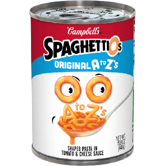
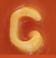
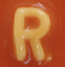
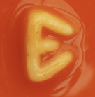
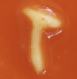
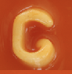
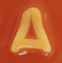
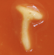
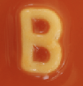
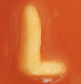
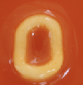
Teams of NPA data scientists have meticulously collected data about the SpaghettiOs A to Z's product.
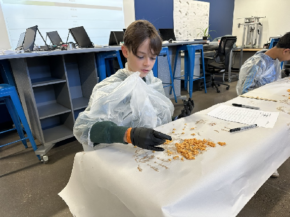
Task 1: Gather Data
-
In your main program, create a Python dictionary that maps each uppercase letter of the English alphabet to the average count of that letter in each SpaghettiOs can, using the collected data.
Task 2: Parse Text
Write code to parse the text of The Great Gatsby.
-
Download the text file and save it next to your Python (
.py) file. -
Create a Python dictionary to keep count of each letter in the text. Map each uppercase letter to the integer
0to start. -
Write a loop to:
- Parse each character in the text file.
- If the uppercase version of the letter exists as a key in the counter dictionary, increase the value at that key by 1.
- Ignore characters that are not in the dictionary (non-letters, like spaces, commas, and periods).
Starter code:
-
Bundle the above code for Task 2 into a function named
parsethat returns the counter dictionary to your main program.
Warning
Asking a dictionary for a key it doesn't have stops your program with a
KeyError — the dictionary cousin of the IndexError you met in 2D
List Practice. That's why you check that the character exists as a key
before counting it. The
in keyword is
your friend here.
Task 3: Analysis, Can Count
Determine how many cans would be needed to represent the entire text of The Great Gatsby. Write a function that accepts the per-can-letter-averages dictionary and the text-file-letter-counter dictionary as arguments and returns the number of cans required.
Algorithm:
- Start with a variable to track the answer: set
max_cans_neededto0. - Loop through each letter (key) in the text counter dictionary.
- Get the required number of that letter: look up the value in the text dictionary.
- Get the average number per can: look up the value in the per-can-letter-count dictionary.
-
Compute how many cans are needed for this letter:
-
Round up to the nearest whole number. (You can't buy part of a can!)
- Update the maximum if needed: if
cans_neededis greater thanmax_cans_needed, update it. - After the loop ends,
max_cans_neededis your final answer.
Your function should return max_cans_needed.
Why the maximum?
Every can delivers the whole alphabet at once, whether you need those letters or not. The letter that demands the most cans decides the order size — every other letter comes along for the ride.
Task 4: Analysis, Additional
Write additional functions:
- Cost —
max_cans_neededmultiplied by the current per-can cost in Flagstaff. - Height of stacked cans —
max_cans_neededmultiplied by the average measured can height found in the data. - Weight of stacked cans —
max_cans_neededmultiplied by the average measured can weight found in the data. - Calories —
max_cans_neededmultiplied by the per-can calorie count found in the data. - Number of SpaghettiOs left over — after using the cans to spell out The Great Gatsby, how many letters are left over?
Task 5: Summary and Presentation
Your main program should call each of your functions and print the results clearly for all the above statistics (cost, height, weight, calories, leftovers). You will present these to the English teacher verbally with your recommendation on whether their literature should be distributed in pasta form.
Turn It In
- Your final Python (
.py) file. You do not need to submit the Gatsby text file.
How It's Graded
This lab is worth up to 4 points. One score covers everything you turn in.
| Score | What it looks like |
|---|---|
| 4 — Excellent | The whole pipeline runs: the per-can averages dictionary matches the collected data, parse returns a counter that caught every letter of Gatsby, can_count implements the max-of-ceilings algorithm, the cost, height, weight, calorie, and leftover functions all work, and the main program prints a labeled summary a client could read. Your can count agrees with the other data scientists' — your parser doesn't leak. |
| 3 — Above Average | The full analysis runs, with a slip — a rounding miss, a leftover count off, or one summary line unlabeled. |
| 2 — Average | parse counts letters but the analysis is partial — a can count with no follow-on statistics, or an averages dictionary that doesn't match the data. |
| 1 — Below Average | The text never gets parsed, so no analysis exists to check. |
| 0 — Failing | Nothing submitted, or no evidence of the program. |